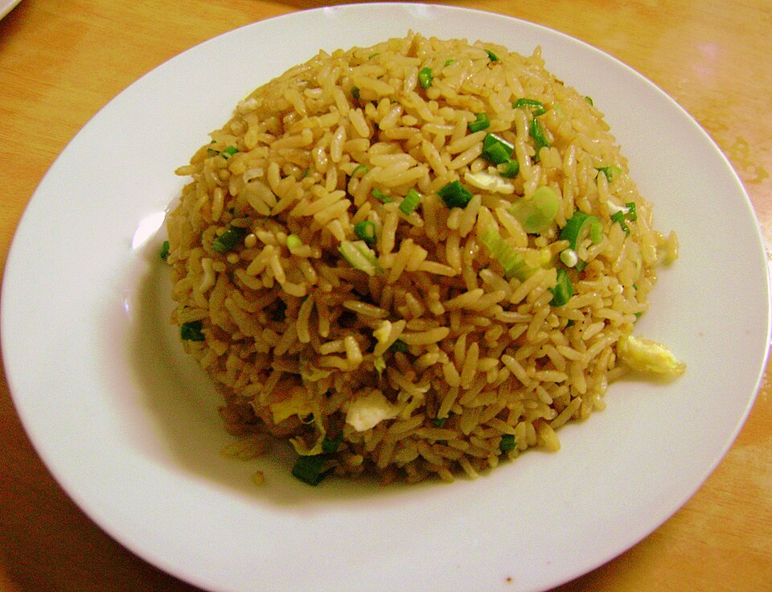

Chaufa de Pollo

Description
Chaufa or Chaufán rice is a type of fried rice that is easy and quick to prepare, ideal for using up leftover cooked rice and giving it a flavorful touch with soy sauce,
ginger and scallions.
Ingredients
- 2 cups of cooked rice (preferably from the day before)
- 250g of diced chicken
- 2 eggs
- 1 teaspoon of grated ginger
- 2 tablespoons of soy sauce
- 1 teaspoon of sesame oil
- 2 tablespoons of vegetable oil
- 1/2 teaspoon of sugar
- 1/2 teaspoon of salt
- 1/2 teaspoon of pepper
- 1/4 cup green onion (green and white parts)
- 1 tablespoon of oyster sauce (optional)
- Sliced Chinese sausage (optional)
Steps
-
In a wok or large frying pan, heat a tablespoon of vegetable oil over high heat. Add the
cubed chicken and stir-fry until golden brown. Add a tablespoon of soy sauce and mix
well. Remove the chicken and set aside.
-
In the same pan, add a few drops of oil and pour in the beaten eggs with a pinch
of salt. Stir quickly to form loose scrambled eggs. Remove and set aside.
-
Add the remaining oil and sauté the grated ginger for a few seconds until fragrant.
Add the cooked rice and stir constantly to combine it with the ginger.
-
Return the chicken and scrambled egg to the pan. Add the sliced Chinese sausage (if
using), the remaining soy sauce, oyster sauce (optional), sugar, salt, and pepper. Mix
well and cook for a few more minutes.
-
Add the sesame oil and chopped scallions. Stir well and cook for one
more minute. Serve hot with fried wontons or tamarind sauce, if desired.
Main page